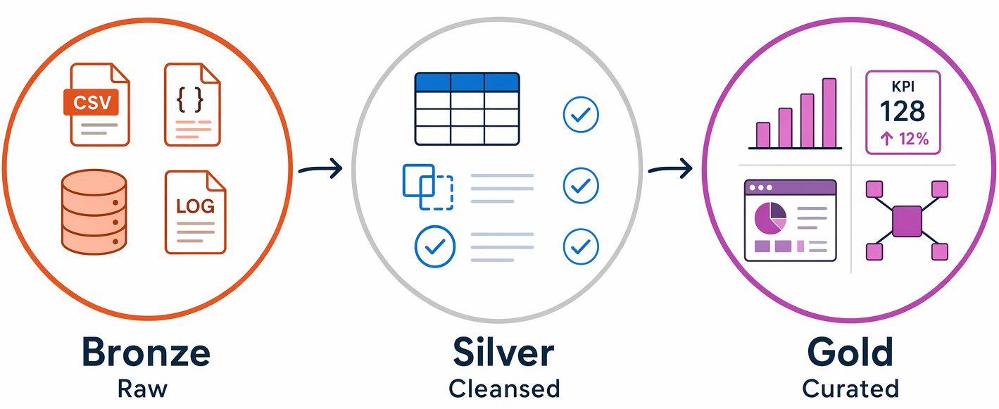

Prompt 1RepresentativeDiagram72 context words
Organizing data with the medallion architecture
- Bronze: raw data ingested as-is from source systems, with no transformations applied, preserving the original records for reprocessing.
- Silver: cleansed and conformed data, with duplicates removed and data types standardized.
- Gold: aggregated, business-ready data modeled for specific reporting and analytics use cases.
Teams use this pattern because it creates clear quality boundaries at each layer, and you can always reprocess data from the original Bronze records if requirements change.
Section: Organizing data with the medallion architecture - **Bronze**: raw data ingested as-is from source systems, with no transformations applied, preserving the original records for reprocessing. - **Silver**: cleansed and conformed data, with duplicates removed and data types standardized. - **Gold**: aggregated, business-ready data modeled for specific reporting and analytics use cases. Teams use this pattern because it creates clear quality boundaries at each layer, and you can always reprocess data from the original Bronze records if requirements change.

- Product/workload
- Cross-product data and AI fundamentals
- Content purpose
- Introducing or explaining a concept
- Module
- explore-core-data-concepts
- Source category
- Diagram
- Alt text
- Diagram showing a medallion architecture.
- Source file
explore-core-data-concepts/includes/6-analytical-processing.md